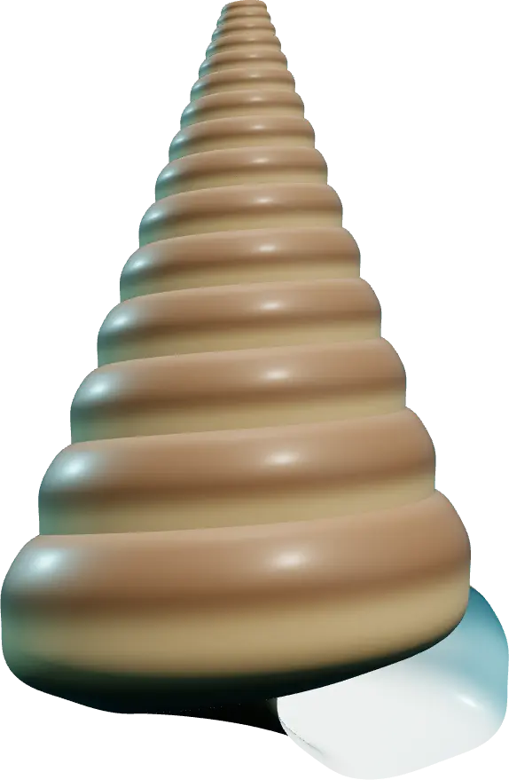
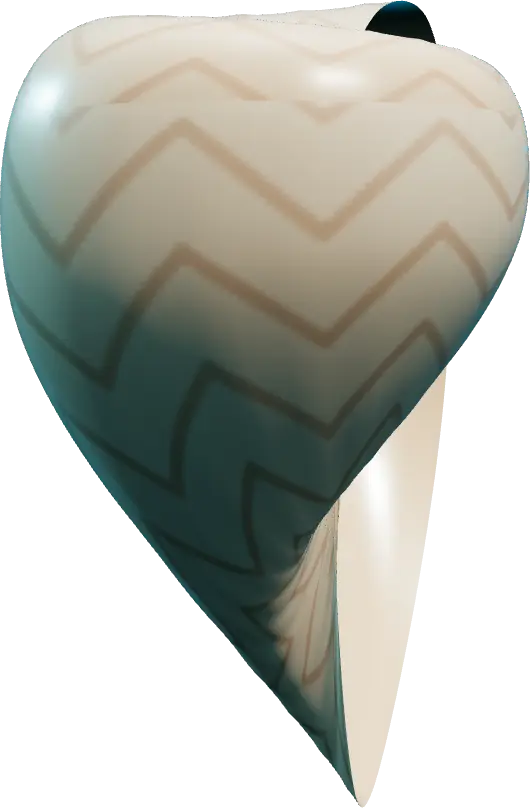
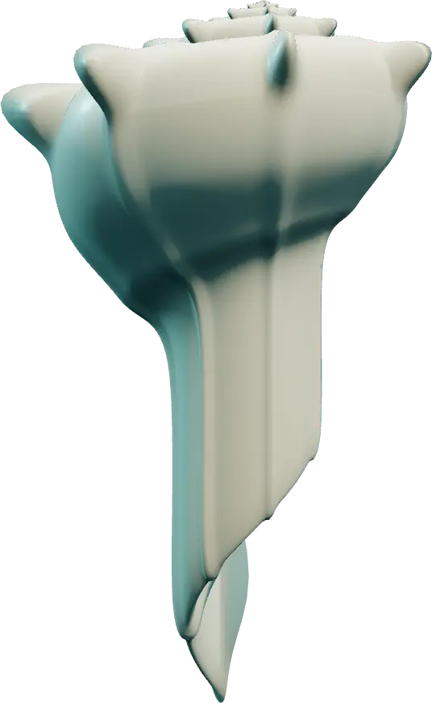

01
"Dá pra ouvir o mar?"
O barulho que você ouve ao encostar uma concha no ouvido é o som do próprio ambiente, ecoando lá dentro. Não é o mar, mas que é bonito, é.
Respire fundo…
0% · enchendo os pulmões
Museu das Conchas · Itapirubá, Imbituba – SC
Mais de 2.000 espécies de conchas de todos os oceanos, numa casa de frente para o mar de Itapirubá. Desça com a gente.
−20 mZona do sol
O Museu das Conchas é um museu particular em Itapirubá, no Litoral Sul de Santa Catarina.
O acervo reúne mais de 2.000 espécies de conchas do Brasil e do mundo, de todos os tamanhos e formas, todas catalogadas. Nasceu da coleção de uma vida do conquiliologista Antonie Maljers e é mantido por ele e por Marilene Brandalise, sem apoio governamental. Quem sustenta o museu são os visitantes.
0+
espécies catalogadas, nacionais e internacionais
0+
anos de conquiliologia, o estudo das conchas
0
países percorridos pelo fundador estudando a vida marinha
0%
independente: cada ingresso ajuda a manter o acervo
Volta0,00Tamanho: 1×
−90 mComo nasce uma concha
01 · O manto
Ela cobre o corpo do molusco e fabrica a concha, camada por camada, a partir do que o animal tira da água do mar.
02 · Pedra viva
O resto são proteínas que funcionam como uma armadura flexível. É por isso que uma concha é leve e, ao mesmo tempo, difícil de quebrar.
03 · Espiral logarítmica
A concha só cresce pela borda da abertura, sempre na mesma proporção. Cada volta é uma cópia maior da anterior, e a casa sempre serve no morador.
04 · Linhas do tempo
Como os anéis de uma árvore, as linhas de crescimento registram as fases da vida do animal, e pesquisadores as usam para estudar o mar do passado.
−180 mAnatomia de uma concha

−320 mZona do crepúsculo
Doze espécies para começar a descida. As outras mais de 2.000 esperam por você no museu.
As conchas desta página são modelos 3D gerados por computador a partir da geometria real do crescimento das conchas. As de verdade, só indo lá.
−1.100 mZona da meia-noite
01
O barulho que você ouve ao encostar uma concha no ouvido é o som do próprio ambiente, ecoando lá dentro. Não é o mar, mas que é bonito, é.
02

A grande maioria dos caracóis enrola a concha para a direita. As "canhotas", que giram para o outro lado, são raras e disputadas por colecionadores.
03

Conchas vazias viram a casa de caranguejos-ermitões, que trocam de concha conforme crescem. Na praia, a melhor lembrança é uma foto.
04
O cauri circulou como moeda por séculos em partes da África e da Ásia. Pequeno, durável e difícil de falsificar: o dinheiro perfeito.
05

Os fenícios tiravam de caramujos múrex a púrpura-de-tiro, um corante tão caro que só reis e imperadores podiam usar.
06

Santa Catarina é o maior produtor de moluscos cultivados do Brasil: ostras, mexilhões e vieiras de SC responderam por cerca de 98% da produção nacional em 2017, segundo dados do IBGE citados pela Epagri.
−3.000 mZona abissal
Do cauri de 2 centímetros à tridacna de quase um metro e meio, em escala real entre si.
Escala · 1 cm = 20 px
−4.200 mHora de subir
Antonie Maljers começou a recolher conchas ainda menino, em Veere, na costa da Zelândia, na Holanda.
Holandês de nascimento e cidadão norueguês, dedicou mais de 60 anos à conquiliologia, viajou por 83 países observando a fauna de cada lugar e estudou livros antigos em grandes museus. Em Itapirubá, ao lado de Marilene Brandalise, transformou a coleção de uma vida em um museu aberto a todos.
O acervo continua crescendo com doações de visitantes, pesquisadores e colecionadores.
≈ 10.250 km em linha reta
Infância
As primeiras conchas, recolhidas na costa de Veere.
60+ anos
Dedicados ao estudo das conchas.
83 países
Observando a fauna e pesquisando em grandes museus.
Itapirubá
A coleção ganha casa de frente para o mar.
2016
Ano de abertura informado ao Cadastro Nacional de Museus.
Hoje
Mais de 2.000 espécies, e contando.
−600 mSubindo para Itapirubá
Itapirubá vem do tupi-guarani e quer dizer algo como "pedras que rolam para o mar", na tradução mais citada. É uma praia de dunas e costões, dividida ao meio por um morro de pedras, entre Imbituba e Laguna.
De julho a novembro, elas vêm para cá.
As baleias-francas chegam ao litoral catarinense para acasalar, ter os filhotes e amamentar. Imbituba é a Capital Nacional da Baleia-Franca por lei federal (Lei nº 12.282/2010), e a observação é feita da terra firme.
2municípios
Um morro de pedras divide a praia: Itapirubá Norte fica em Imbituba e Itapirubá Sul, em Laguna. O museu está na Praia Norte.
Os sambaquis: 6 mil anos de história empilhada.
Muito antes do museu, povos que viviam neste litoral já guardavam conchas: os sambaquis são morros feitos de conchas, ossos e restos de fogueiras, acumulados ao longo de milhares de anos. Em Jaguaruna, o Sambaqui de Garopaba do Sul é considerado o maior do mundo, com cerca de 30 metros de altura e mais de 6 mil anos.
~130km de costa
A Área de Proteção Ambiental da Baleia Franca, criada em 2000 e administrada pelo ICMBio, protege o litoral da região. A cerca de 3 km da costa de Itapirubá fica a Ilha das Araras, conhecida pela pesca e pelo mergulho.
−60 mQuase na superfície
Os horários podem mudar. Na dúvida, ligue antes: (48) 99626-7470
Av. Atlântica, 2322
Praia Norte, Itapirubá
Imbituba – SC
De frente para o mar, na Praia Norte de Itapirubá. O acesso é pela BR-101, entre Imbituba e Laguna.
−25 mEscolas e grupos
Traga sua turma para ver de perto o que o livro só mostra em foto. Combine a data com a gente antes de vir.
−12 mApoie o museu
O Museu das Conchas é particular e não recebe apoio do governo. Dá para ajudar de quatro jeitos:
Reserve cerca de uma hora. Quem gosta de ler cada etiqueta e conversar sobre as conchas costuma ficar bem mais.
Sim, com horários diferentes por temporada. Na alta temporada, de terça a domingo, das 15h às 20h. Na média e baixa temporada, aos sábados, domingos e feriados, das 14h às 18h. Como os horários podem mudar, vale ligar antes: (48) 99626-7470.
Adulto R$ 5,00. Crianças e idosos R$ 2,50. Ingresso família, para até 5 pessoas, R$ 10,00.
Pode, e é uma ótima ideia. Combine a data antes pelo formulário de agendamento, pelo WhatsApp ou pelo e-mail.
Não. É um museu particular, mantido por Antonie Maljers e Marilene Brandalise, sem apoio governamental. O ingresso e as compras no catálogo ajudam a manter o acervo.
Sim. O acervo cresce com doações de visitantes, pesquisadores e colecionadores. Se puder, traga junto o local e a data em que a concha foi encontrada: essa informação vale tanto quanto a concha.
O museu tem um catálogo de conchas de várias partes do mundo e de artesanato da região, publicado no Facebook do museu.
Prefira a foto. Nunca leve conchas com animais vivos dentro, e lembre que as vazias podem ser a casa de um caranguejo-ermitão. Achou algo especial? Traga para a gente ver.
Arraste para girar
Modelo 3D ilustrativo gerado por computador.